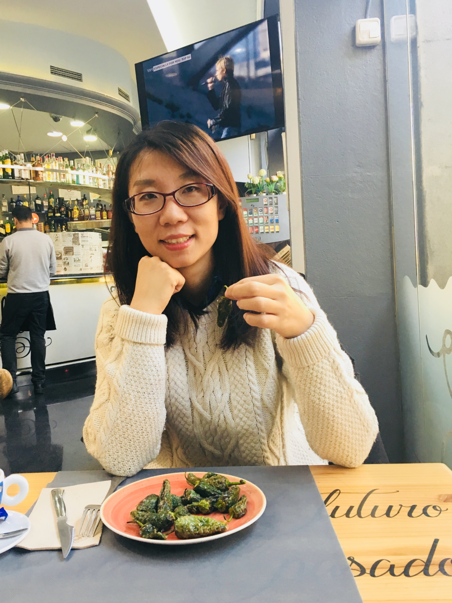

FANGHUI XIAO

Fanghui Xiao
Ph.D. Candidate,
fax2@pitt.edu
iRiS Lab
, School of Computing and Information
University of Pittsburgh
As an information science researcher and a user experience researcher, my primary area of research is human data interaction (HDI), an emerging interdisciplinary research area that has been springing forth from both fields of human information interaction (HII) and human computer interaction (HCI). I invested most of my professional effort into investigating how people were trying to forage, make sense of, and use open data and its platforms, why they were having such difficulties, and how that might be addressed through new designs. My ultimate research goal is to promote data equality by advancing the design of the current online open data environment and improving people's data literacy.

" We keep moving forward, opening up new doors and doing new things, because we are curious... And curiosity keeps leading us down new path. "
~ Walter Elias Disney